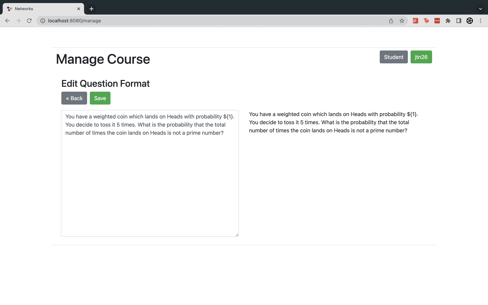
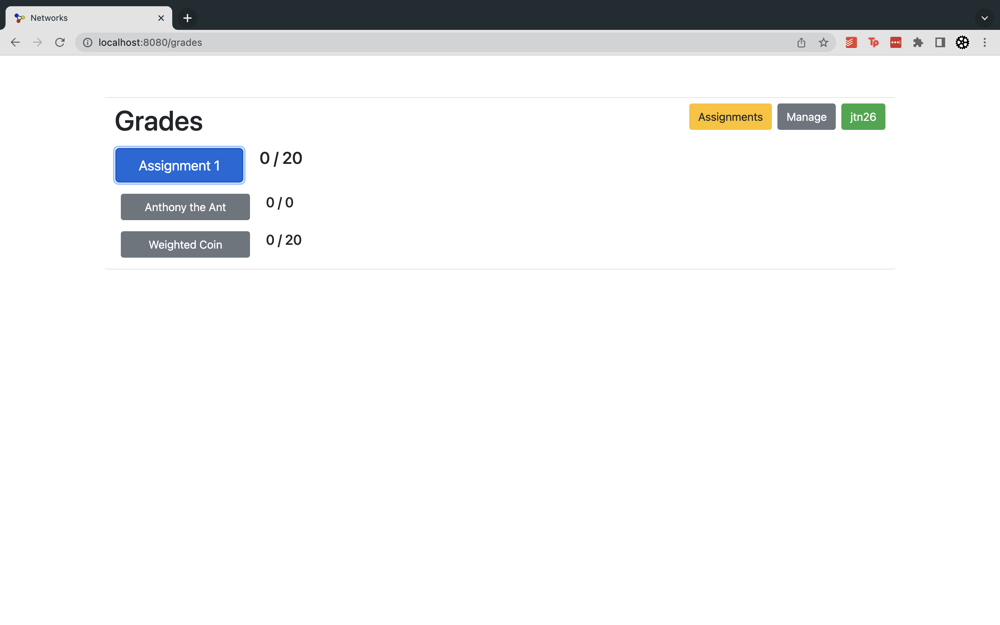
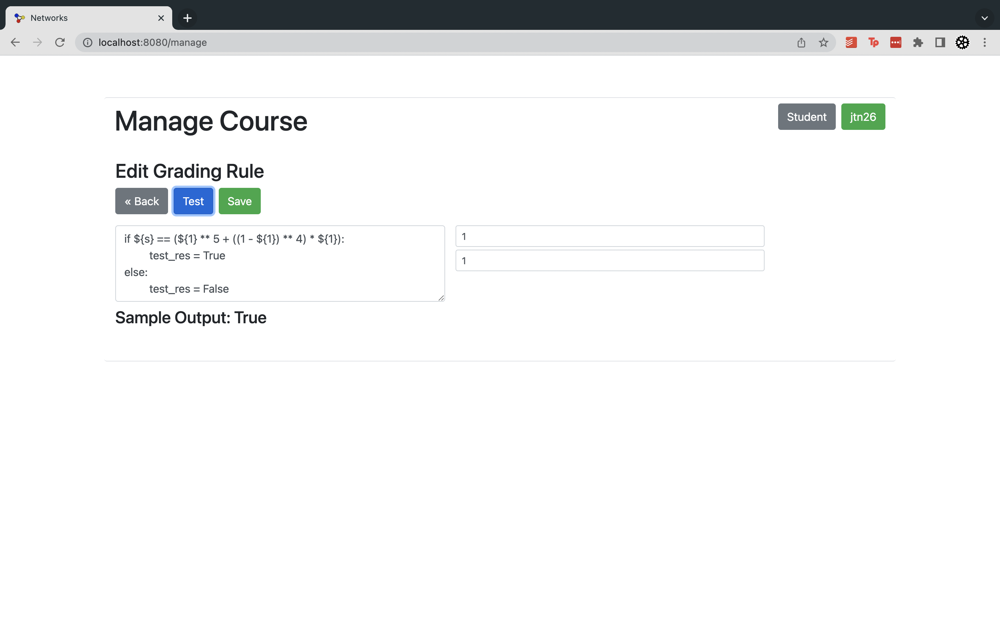
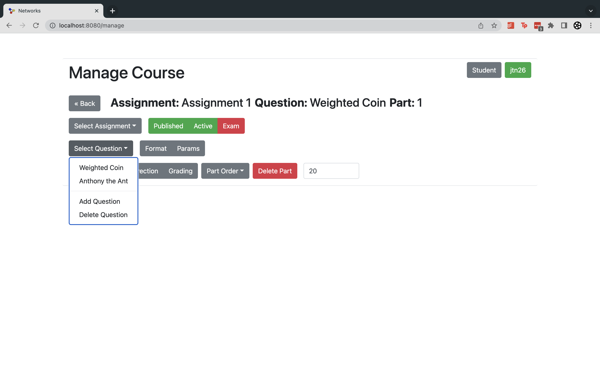
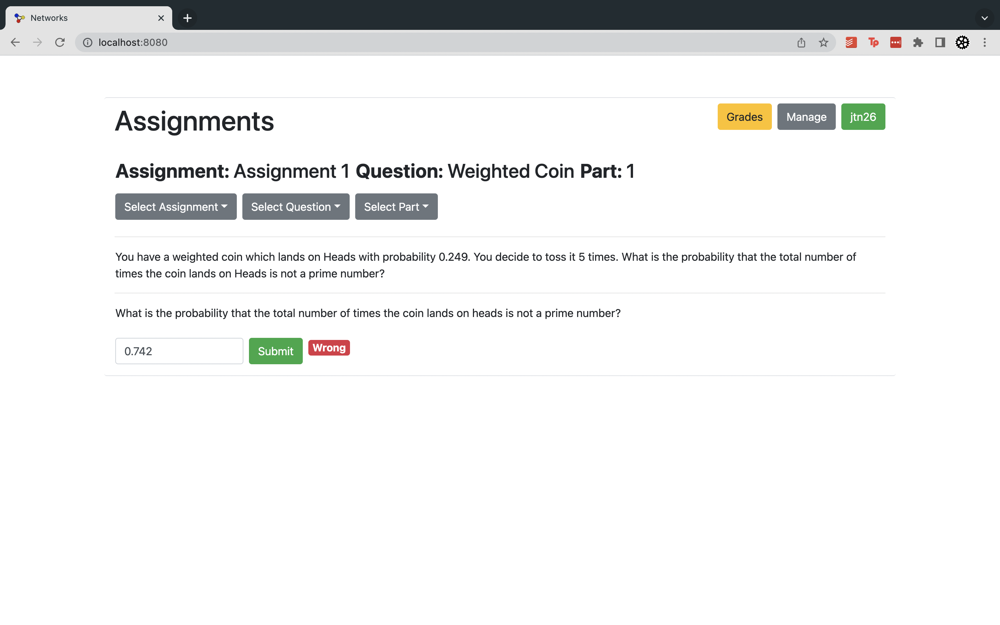
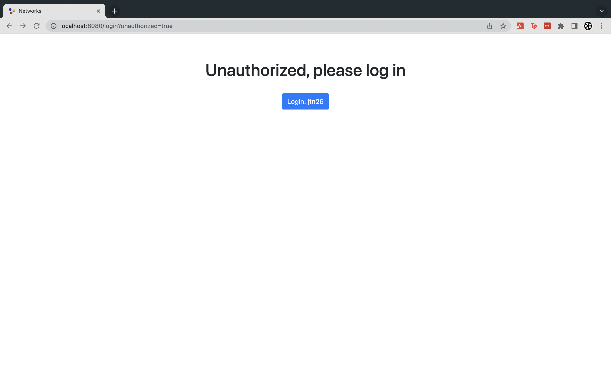

Structure of Networks Web
Author: Jamie Nachbar
Advisor: Ronald Coifman
Abstract
This project is a web app built to facilitate the teaching of AMTH 160: Structure of Networks.
Structure of Networks is a unique course in that it is administered primarily by a series of scripts.
Homework is procedurally generated, assigned, and grades to each of over one hundred students. Before this project,
this was done as a patchwork series of dozens of Google Sheets, Forms, and Scripts. This app unifies the entire approach,
allowing for a greatly improved experience both for the teaching assistants who are creating and administering the assignments
as well as the students who complete the assignments. The frontend of the app is written in Vue, and the backend is written in python
and uses Flask to provide an API that the client can use to manage data relating to the course. One of the primary concerns with the
original system was the overly broad permissions that students had to agree to, and this system is integrated with Yale-CAS to
allow students to authenticate themselves against that system; no passwords or personal information is stored by the app. Another key feature
of the app is the procedural generation and grading of the homework. In addition to adding students and other TAs to the class, the teaching assistants can specify rules
for the generation of assignments by creating a different set of parameters for each student. They also specify how the student's
answer is to be interpreted based on these parameters. Because of this flexibility, the use of this system goes beyond just
Structure of Networks, this could be used for any class where answers are either right or wrong and the valid solution(s)
to a problem can be specified in a script. Students can manage their submissions to assignments as well as check their grades for
the course in a unified way, something that is missing from the current implementation.
Links
Images





